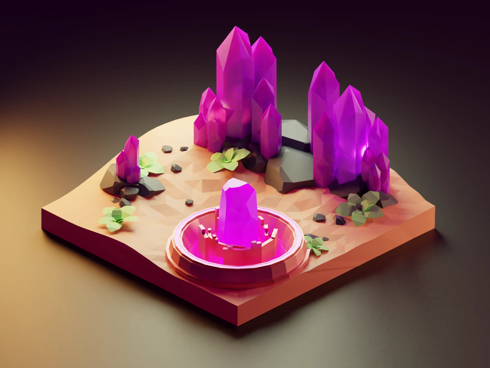

Ena izmed težjih nalog, X3DOM je eden izmed mnogih načinov, ki nam omogoča prikaz 3D objektov na spletišču. Po precejšnjem poizvedovanju in popravljanju kode smo najprej izvozili naš prvotni .blend projekt v .x3d datoteko. Nato smo sledili navodilom X3DOM organizacije, da smo ustrezno 3D objekt tudi vstavili na našo spletno stran. Sprva je naloga povzročala nekaj težav, vendar smo poiskali rešitve in jih tudi ustrezno zabeležili.

Prikaz 3D objekta, preden smo ga ustrezno izvozili v x3d datotečni format.
Datoteka X3D, ki si jo na ustrezno posodobljenih spletnih brskalnikih lahko brez težav ogledujemo. Zaradi razlik v izvozu je izgubila malo barve in tekstur, vidni so tudi prej skriti objekti v .blend datoteki.
Prikaz datoteke .X3D formata v brskalniku z uporabo X3DOM knjižnice. Ogled ne potrebuje vtičnikov in ostalih posebnih lastnosti, vse je poskrbljeno z JavaScript knjižnico.
POZOR! Brskalnik zaradi varnostnih razlogov ne dovoljuje nalaganje lokalnih datotek, ko se spletna stran ogleduje takrat, KO ŠE NI OBJAVLJENA NA STREŽNIKU. Za ustrezno konfiguracijo beri sledečo povezavo. Močno priporočamo spletni brskalnik Firefox, saj je njegova konfiguracija izjemno lažja kot pri brskalniku Google Chrome.
Hkrati je potrebno biti pozoren tudi na varnost na strežniku samem. Firefox ni želel prebrati X3DOM knjižnice brez posebne komande na začetku -head- značke: "meta http-equiv="Content-Security-Policy" content="upgrade-insecure-requests"".